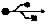

ADSL-hvorfor
Jeg har selv haft ADSL i Gl. Ullits siden sidste sommer (med TeleDanmark, via mit arbejde), så jeg har nået at få nogen erfaring på området, som jeg gerne vil videregive her. Hvis du har tekniske spørgsmål, må du gerne kontakte mig eller en af de øvrige i
supportgruppen
David Douglas
Om ADSL
Hastighed:
Det hurtigste almindelige (ikke-ADSL) modem har en hastighed på 56 kb/s. Den billigste ADSL- forbindelse er 256 kb/s dvs. 4 ½ gange hurtigere.
Når hastigheden skrives som f.x. 256/128, så betyder det, at du henter data (fx. når du surfer) med 256 kb/s. Når du selv skal sende noget, fx. en email, er hastigheden 'kun' 128 kb/s. I praksis henter de fleste meget mere, end de sender.
Forskellen mellem et almindeligt modem og ADSL ses tydeligst, når man henter store filer - musik, software, videoklip osv. Selv om noget gratis software, som man kan hente på nettet, fylder flere CDer, så er det med ADSL realistisk at hente det. Om det så tager et døgn - det koster ikke noget, det passer sig selv, og din telefonlinie blokeres ikke imens.
Jeg vil anbefale 256/128 til at starte med - med mindre man har et helt konkret behov. Iøvrigt er de nævnte hastigheder kun maksimumshastigheder - der kan være flaskehalse andre steder ude på Internettet, når du surfer verden rundt.
Fast udgift
- der er ingen minuttakster. Du kan surfe og hente filer, alt hvad du vil uden at være bange for ekstraregninger. Bemærk, hvis du har ISDN, eller har overvejet det - ADSL er både billigere og hurtigere.
Telefonlinien frigives
Selv om ADSL bruger din gamle telefonlinie (kobberkabel), så sker det samtidigt med, at du taler i telefonen - din telefonlinie er altså ikke optaget, mens du surfer. Og der sker ingen ændringer ved din telefonlinie - du skal ikke - som med ISDN - købe nyt telefonudstyr.
Kan jeg vælge andre ADSL udbydere under dette projekt?
Nej, Det Digitale Ullits har indgået aftale med Tiscali, og projektet udbetaler kun tilskud til dem, der vælger en Tiscali ADSL-løsning. P.t. er TeleDanmark den eneste anden udbyder i vores område; hvis du vælger dem, er det udenfor dette projekt.
Hvad med mit telefonabonnement?
Du kan brug et hvilket som helst teleselskab, når du vælger Tiscali ADSL. Det er ikke tilfældet ved TeleDanmarks ADSL tilbud. Tiscali tilbyder ikke fastnet-telefonabonnementer. Hvis du er nødt til at have ISDN pga. dit arbejde, kan det fint fungere sammen med ADSL.
Kan jeg bruge ADSL til andet - fx. kabel TV, telefoni?
P.t. er der ingen, der tilbyder kabel TV via ADSL. Det kræver nok også mindst 10 gange større hastighed, end det billigste tilbud omfatter. Men det kommer nok.
Ang. telefoni er der ikke noget telefontilbud med i pakken. På Internettet kan man dog ved at bruge computerens mikrofon og højtalere snakke med en anden, der sidder ved sin computer. Det er ADSL velegnet til - og så kan man snakke med venner og familie i udlandet helt gratis.
Hvad med beskyttelse mod hackere?
Med ADSL kan din computer være på Internettet døgnet rundt. Derfor er der øget risiko for, at de automatiske værktøjer, hackerne bruger, får øje på din computer. Den bedste beskyttelse får man med en router ( udtales 'ruter', forklares senere). Med den er det simpelthen ikke muligt for hackerne at komme forbi routeren ind til din computer, og routeren kan de ikke hacke.
Vælger man Tiscalis billigste tilbud, hvor computeren sidder direkte på modemet, er man mere udsat. Og du skal ikke tro, at bare fordi du er almindelig bruger, er du uinteressant for hackerne. Deres hackerværktøjer kan ikke skelne mellem firmaer og private: de søger bare, indtil de finder et sårbart system, som de kan overtage styring af. I mange tilfælde misbruger de så din computer til, uden at du ved det, at angribe andre computere på nettet.
Der findes software firewall programmer f.eks. ZoneAlarm, som er gratis ved privat brug. Det er en god beskyttelse, uanset hvilket ADSL-tilbud du vælger, - også hvis du bare har en almindelig Internetopkobling. Hvis du vælger det billigste ADSL-tilbud, bør du installere den medfølgende ZoneAlarm. Men den billigste router-løsning koster kun 15 kr. mere om måneden.
Et antivirus program
er ikke en erstatning for en software firewall; de virker fint i kombination til at beskytte dig mod forskellige slags trusler.
Om ADSL-udstyr
Der skal altid bruges et ADSL-modem. Enten kobler man sin computer direkte på modemet eller via en router, som så kobles til modemet. Jo mere udstyr, der er mellem din computer og telefonlinien, jo bedre er din computer beskyttet mod elektriske skader. Vi bor i et område, der er meget udsat for lynnedslag. Jeg har selv mistet et par almindelig modems pga. den overspænding, der kommer ind på telefonlinien efter et lynnedslag i området - det er følsom elektronik.
Da ADSL-modemet og routeren lejes fra Tiscali, kan vi i princippet være ligeglade, eftersom det er Tiscali, der i givet fald skal erstatte dem.
Vi bor i et område med forholdsvis store udsving i strømkvaliteten. I Gl. Ullits har jeg målt spænding på op til 246,7 V - højest udenfor fyringssæsonen. Min erfaring fra TeleDanmarks ADSL er, at deres ADSL-modem og router ikke altid kan tåle disse spændinger, så jeg er glad for, at det er TeleDanmark og ikke mig, der ejer udstyret.
Hvilket tilbud skal jeg vælge?
Tiscalis
hjemmeside
viser de forskellig tilbud. Her er min forklaring:
Med alle tilbud følger en 10 MB-stor hjemmeside hos Tiscali. Det er rigelig til en personlig hjemmeside; den må til gengæld ikke bruges til kommercielle hjemmesider med megen trafik (dvs. mange besøgende, der henter store filer). Sådanne hjemmesider kan i stedet for placeres under projektets hjemmeside. Du får også 10 email adresser.
Der findes to slags tilbud - en opsætning med ADSL modemet alene, eller en opsætning, der også bruger en router (læs mere nedenfor). På Tiscalis hjemmeside kan man vælge opsætningstyper og hastigheder og se, hvad prisen bliver. Her nævner jeg priserne for en 256/128 kb/s forbindelse. Priserne gælder ved tilmelding senest 31/3.
- Eicon Diva ADSL modem: det billigste, men også det mest begrænsede tilbud. Det kan kun bruges med én PC, og kun med følgende styresystemer: Windows 98 Second Edition (SE), Windows Millenium Edition (ME), Windows 2000 eller Windows XP. Desuden skal din PC have en USB port.
345 kr./md. -170 kr. i projektilskud = 175 kr./md.
Hvad er en USB-port?
Det er et aflangt stik, der bruges til fx. at koble et digitalt kamera til din PC. Den findes på de fleste PCer lavet indenfor de sidste par år, men ikke ret meget før. Følgende symbol ses ved siden af den:

Jeg har Windows 98. Hvordan ved jeg, om det er 'Second Edition' (anden udgave)?
Mens din computer starter op, viser den et startbillede med skyer. Hvis der kun står Microsoft Windows 98, har du ikke Second Edition. Der skal stå Microsoft Windows 98 Second Edition (eller SE).
Hvis du vil bruge din computer som Internetserver, kræver det en router (dette kræver stor teknisk indsigt).
- Router-baserede løsninger
En router bruges til at lave et internt netværk i dit hjem. Hvis du har flere computere, kan de dele ADSL forbindelsen. Det kan fx. være rart at have en computer til børnene, og mange firmaer sælger deres gamle computer fra til medarbejderne til små penge.
Ud over at dele ADSL adgang er computerne forbundet til hinanden, så man kan overføre filer, spille flerbruger-spil, bruge samme printer, scanner osv.
For at computeren skal kunne tilsluttes routeren, skal computeren have et netværkskort (Ethernet kort, som understøtter TCP/IP). Stort set alle nyere computere har det. Hvis ikke, kan du købe et til at sætte i din computer til ca. 140 kr. Husk at spørge, om det kan køre på din Windows udgave, Macintosh, osv.
Hvis du i første omgang kun tilslutter 1 computer, kan den tilsluttes routeren direkte. Hvis du har flere, og du vælger Cisco 677 løsningen (se nedenfor), skal de hver især via et netværkskabel tilsluttes en såkaldt hub, som du selv må købe, og så skal hubben forbindes til routeren. På en hub er der typisk plads til at tilslutter 4-5 computere. Alle disse ting kan købes i PC-butikker. De billigste hubs koster under 300 kr og kører med en hastighed (på dit eget interne netværk) på 10 Mb/s, og dette er rigeligt for de fleste.
Du må dog godt bruge en hub, som er hurtigere. Så skal netværkskortet ogå være hurtigere.
Med en router kan du bruge alle Windows udgaver, Macintosh, Linux, osv.<
Netværksstikket på de fleste PCer ligner det klare plaststik på en telefon, der forbinder telefonrøret til apparatet. På en bærbar computer skal der dog bruges et særligt netværkskort på størrelse med et kreditkort, og de er lidt dyrere.
Hvis der er interesse for det, kan vi lave en temaaften om opsætning af eget netværk.
Tiscali tilbyder følgende routerløsninger:
- Cisco 677 router , 256/128 forbindelse, 360 kr./md. -170 kr. projektilskud = 190 kr./md.
- Cisco SOHO 77 router som 677, plus videokonference mulighed, ekstra sikkerhed, kræver ingen hub, 385 kr./md. -170 kr. projektilskud = 215 kr./md.
- Cisco 827 router - til rigtig professionel brug - som de andre, plus f.x meget sikre forbindelser til netværket på din arbejdsplads, giver garantier for netværkshastigheder, kræver ingen hub. 485 kr./md. -170 kr. projektilskud = 315 kr./md.
Men mindre du har et specielt behov, er Cisco 677 en god løsning.
Er min tilmelding hos Tiscali bindende?
Efter tilmelding (enten på Tiscalis hjemmeside eller telefonisk) gælder lovens 14 dages fortrydelsesret. Bagefter binder du dig til betale abonnement i 5 måneder. Efter det kan du opsige abonnementet med en måneds varsel. Har du måske bestilt ADSL for flere måneder siden, så ring lige til Tiscali og hør, om de stadig har din ordre registreret.
Hvordan foregår installationen?
Der kan gå et par uger efter din bestilling. Du får et brev (eller email, hvis du tilmeldte dig via Internet - SÅ CHECK dine emails hver dag) med en dato for montørbesøg. Passer datoen ikke, kan du ringe og aftale en anden dato. Det er TeleDanmarks montører, der udfører arbejdet. Det er ikke sikkert, at du kan få tidspunktet at vide, så regn med at bruge en dag hjemme.
Montøren trækker et kabel fra stedet, hvor din telefonledning kommer ind i huset, til der, hvor du vil have ADSL forbindelsen (ved siden af din computer, men indenfor rimelighedens grænser). Det gør ikke noget, om det er helt på den anden side af huset. Har du plastrør til ledninger under gulvet, kan ledningen føres gennem dem, ellers kan den sættes op på væggen eller udvendigt på husmuren, og de nødvendige huller bores af montøren.
Montøren sikrer kun, at der forbindelse til modemet/routeren udefra. Du skal selv sætte din computer til, men det er som regel meget nemt. Foreningen Det Digitale Ullits kan evt. hjælpe, hvis der er problemer.
Kan jeg senere opgradere til en hurtigere løsning?
Hvis du senere vil skifte til en hurtigere løsning, skal du kun betale den nye månedspris. NB: indenfor de første 6 måneder er du bundet til at betale for den løsning, du har bestilt.